#03
1 - first steps
it's worth noting again that of all pokemon games, black and white are the ones i remember the least about. so i actually remember, like, NONE of the story. at all. this is basically gonna be a first playthrough of black! just, y'know, randomized. here we go.
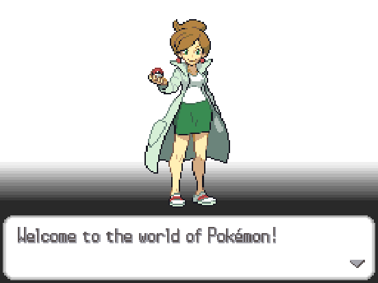
hey uh (google search noise) prof juniper. what's going on. yeah i don't remember you at all, gonna be honest. but that's fine. probably. i think.
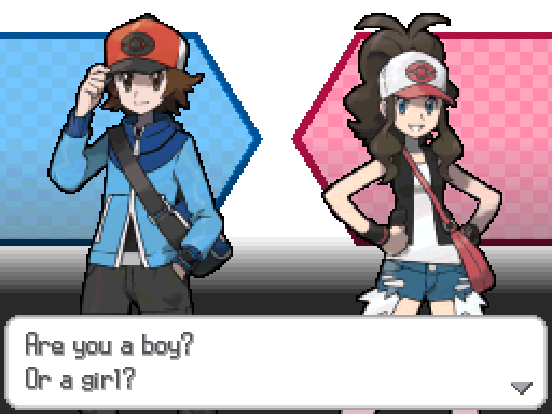
neither technically apply but girl is close enough so i'll take that one. i am to girl what 0.99999999... is to 1. i think. that's probably not entirely accurate but i think it's funny so i'm keeping it
thanks i picked it myself.
after introducing me to my two best friends that i would presumably already know if they were my best friends, she oh so thoughtfully decides that we each get a pokemon, which i'm sure no other professor has ever done before. i don't know the pokemon time line but i don't think black is the first pokemon game chronologically, so i doubt this is a novel idea.
also i guess we don't have to walk to the professor to get the pokemon in this game, they just cut straight to "pick your pokemon" huh. i would say that "i guess you can only do the same thing so many times before it gets repetitive", but they keep doing it after this game so idk. i guess doing nothing is different enough to be fair.
ok ok enough chit chat whats in the box! since i picked two stage evolutions, these should be reasonable and balanced starter picks. and i know that sounds like foreshadowing but i'll be honest with you, it isn't, i'm typing this before i even look.
on our left we have slakoth!
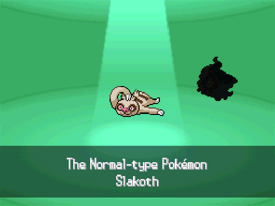
i don't really like this guy to be honest. or, well, i guess it's just slaking. truant is just such a setback on an otherwise likely-mid pokemon (future note: i forgot i randomized abilities lmaoooo still wouldn't have picked it).
on our right we have duskull!
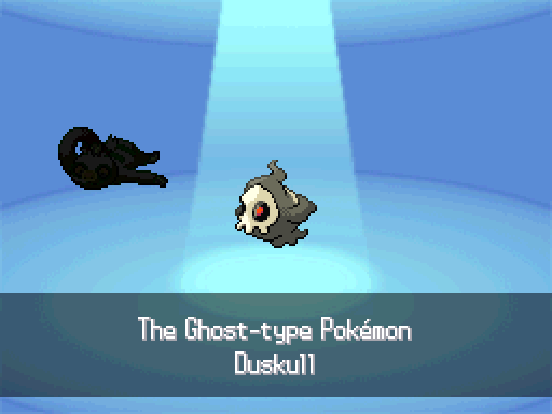
this could be a fun pick. ghost types are neat, dusclops is normally the super tanky guy but remember that base stats are shuffled, so who knows what he could be now!
finally, in the middle we have aron!
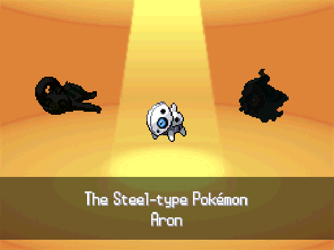
this could also be a fun pick, since aggron is normally a physical wall but could, again, be anything. i also don't remember the gyms in this game, but im sure most of the early ones will struggle with steel types.
i think i'm gonna go with aron over duskull, mainly because i think i forgot to turn on the setting that replaces trade evolutions with normal level evolutions. oops.
and with that (blunder), we get out first little guy! and we get immediately challenged to a battle, as is normal. just don't get my carpet dirty, ok bianca?
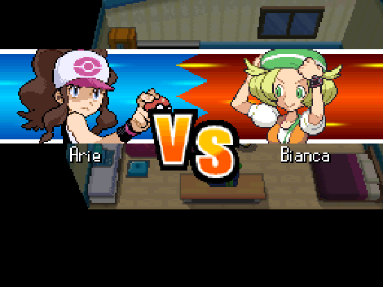
here we go! turns out bianca picked slakoth, which i was actually not sure of since i didn't remember which way the rivals pick. lets look at our moves and stats real quick!

Lv. 5 Aron - Steel / Rock
Ability: Friend Guard
HP: 20
ATK: 10
DEF: 10
SATK: 9
SDEF: 10
SPD: 13
Moves:
- Struggle Bug
- Bullet Punch
i don't think friend guard is gonna be helpful (idk how many double battles there are), but everything else is nice. kinda unfortunate that we got a good speed stat AND bullet punch, but i can't be that upset. balanced stats otherwise, though i don't remember what a normal amount of HP is for a level 5 pokemon. i also don't get to see nature yet, so i'll look at that afterwards.
anyways time to kill bianc- it has sonic boom (which always does 20 damage).
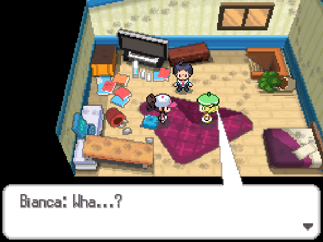
and you got my carpet dirty.
also learned a) it has ice shard, b) it's faster than aron, and c) its probably physically weak since it did 1 damage with said ice shard, and d) it has about average defense based on bullet punch's damage. hey, i'll take the knowledge that i can get from this.
anyways cheren also wants to battle, of course. i guess the room can't get any messier, right?
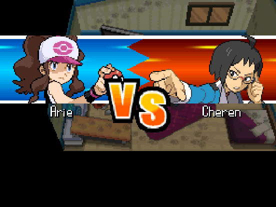
he gets the duskull, naturally. fortunately for me, it only knows shadow sneak and astonish, which are both not very effective, so it's not doing much damage (though it's doing 2 at a time, unlike slakoth). it's also slower than me, which is nice. aron is able to easily take out the duskull, and i finally get a win and 500 pokedollars for my troubles. they go apologize to my mom for the mess, i get a watch because i'm just that cool, and we all set out to see the professor.
here's a fun fact about me: i rarely give my pokemon nicknames. i'm just bad at coming up with names. however, since this is a SpEcIaL pLaYtHrOuGh, i guess i should name my aron something. he's a rock guy, and he's fast, so how about a rock that won a race: rocky!
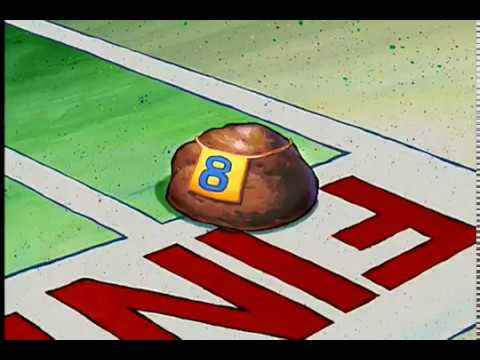
cheren continues being a nerd as bianca continues being confused, the professor explains everything, yadda yadda it's a pokemon game you know how it is. i didn't say no to the pokedex but i wonder what would happen (probably nothing)
and finally, we make it to route 1! the catching tutorial happens with normal pokemon, which means i don't care, and we get a few pokeballs. bianca also refers to her snivy, which she doesn't have, but whatever. before i forget, rocky's nature is docile, which does nothing to stats. oh well, was hoping it'd be more interesting than that.
anyways, let's see what our first caught pokemon is gonna be!
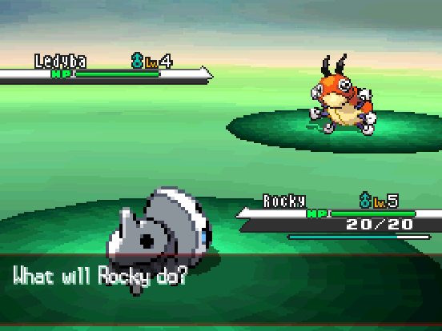
yeah that makes sense. i DID choose for pokemon to be randomized with similar strength, after all. gonna catch it anyways, even though i technically already have bug coverage. unfortunately i'm probably not gonna hold onto him, since his evolved form is pretty weak (even for a bug type).
since he's the five star pokemon, i name him astra. let's see those stats!

Astra
Lv. 4 Ledyba - Bug /
Ability: Sand Veil
Nature: Modest
HP: 19
ATK: 8
DEF: 10
SATK: 8
SDEF: 8
SPD: 6
Moves:
yeah that's not very impressive. useless ability, slow speed, probably has a *decent* attack stat but bad nature for it (w/o nature i'd assume 9 atk / 7 satk). ah well, they can't all be winners. is there anything else in this grass?
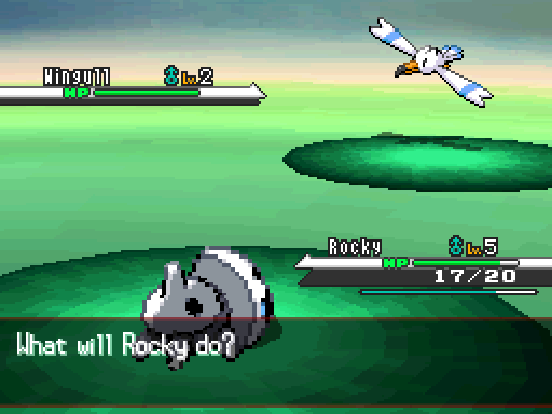
yeah i'll take that. no drizzle on pelipper but oh well, it's good coverage. both of my moves are weak against it, but its level 2 so who cares. one pokeball later and we get larry the wingull (from the latin word larus, meaning gull). i'm gonna look at its stats, but it's not gonna mean much since it's level 2 right now. maybe at the end of this "chapter" i'll put a complete team update? yeah sure. but here are the current stats:

Larry
Lv. 2 Wingull - Water /
Ability: Light Metal
Nature: Naive
HP: 13
ATK: 6
DEF: 7
SATK: 8
SDEF: 5
SPD: 6
Moves:
- Weather Ball
honestly? for level 2, that's not bad. pretty good special attack, and i love the weather ball. useless ability, but that's nothing new. chatter also has an out of battle effect i had to look up and that sounds funny but i don't feel like recording something loud just for confusion chance so i'll pass up on that. i quickly got larry up to level 4 and moved on so that i wouldn't just be sitting in route 1 for 30 minutes (i've already been here long enough typing this up)
so i go say hey to bianca, brag about my THREE pokemon (that's, like, half of a whole team!), and get a call on my apple watch or whatever. it's the professor asking the three of us to meet up at the pokemon center, even though we're like, one block away and she could just walk out onto our street and yell down the road. what a waste of electricity. luckily the pokemon world is like post-scarcity or something? (i swear i'm not just making this up, i remember reading some sort of post about how pokemon prices don't really make sense unless you look at it from that perspective)
cue furret walk music - we're in accumula town now. it's also worth noting that juniper was even closer than i thought, so that tangent is even more justified now.
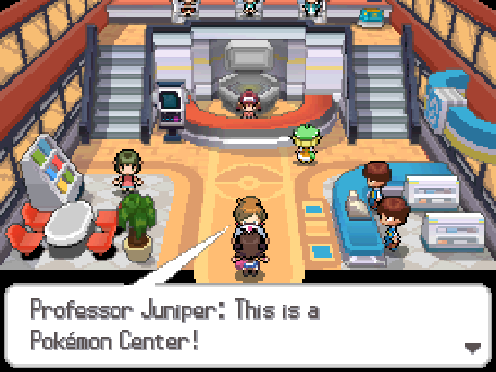
y'know pokemon games should really have a "i've played pokemon before" setting. i know what a pokemon center is. i guess it'd be kinda jarring having the mart in here for the first time though so i get it, though maybe having a quick "hey the pokemart has merged with the pokemon center" would get you around that. idk. i'm not a game designer (yet)
the professor proceeds to show the wonders of free healthcare, a computer, and spending money. but she also mentions a certain fennel in striaton town that we should be meeting. so i guess that's where i'm going next.
and by next i mean next chapter (i guess thats what i'm calling these now) because this one is long enough as is.
the team so far
Rocky
Lv. 6 Aron - Steel / Rock
Ability: Friend Guard
Nature: Docile
HP: 22
ATK: 11
DEF: 12
SATK: 10
SDEF: 13
SPD: 15
Moves:
- Struggle Bug
- Bullet Punch
Astra
Lv. 4 Ledyba - Bug /
Ability: Sand Veil
Nature: Modest
HP: 19
ATK: 8
DEF: 10
SATK: 8
SDEF: 8
SPD: 6
Moves:
Larry
Lv. 4 Wingull - Water /
Ability: Light Metal
Nature: Naive
HP: 17
ATK: 8
DEF: 10
SATK: 11
SDEF: 7
SPD: 8
Moves:
- Weather Ball